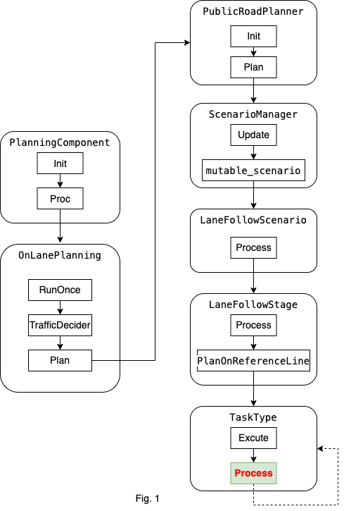
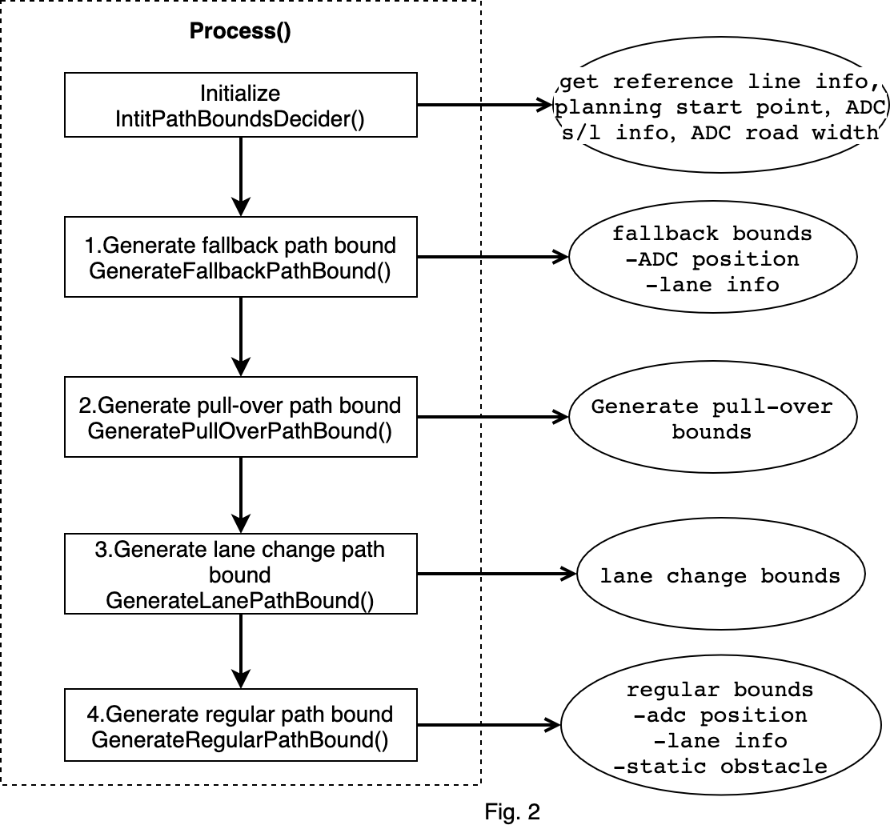
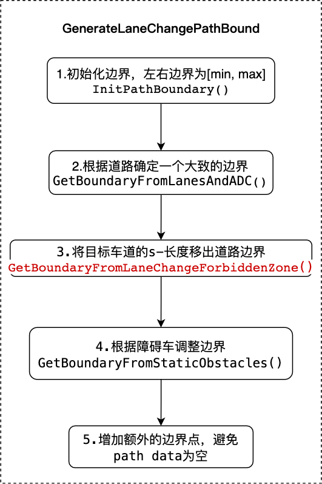

路径边界决策¶
目录
概览¶
路径边界决策是规划模块的任务，属于task中的decider类别。
规划模块的运动总体流程图如下：

总体流程图以lane follow场景为例子进行说明。这里只说明主体的流程，不涉及到所有细节。task的主要功能位于Process函数中。
第一，规划模块的入口函数是PlanningComponent的Proc。
第二，以规划模式OnLanePlanning，执行RunOnce。在RunOnce中先执行交通规则，再规划轨迹。规划轨迹的函数是Plan。
第三，进入到PublicRoadPlanner中的Plan函数，进行轨迹规划。ScenarioManager的Update函数根据当前的scenario_type选择合适的场景。这里的流程图是以lane follow为例。
第四，选择lane follow的场景后，执行Process函数。然后，执行LaneFollowStage中的Process函数，在PlanOnReferenceLine中执行LaneFollowStage中的所有的task。通过调用Excute函数执行task，Excute调用了task的Process（以decider为例子）函数。最后一个图中，TaskType指的不是具体的类名称，代表所有的task类型。虚线的箭头，表示在LaneFollowStage中按照vector中的顺序执行所有的任务。
最后，Task的流程都在Process函数中。之后对task的讲解都从Process函数开始。
路径边界决策代码及对应版本¶
本节说明path_bounds_decider任务。
请参考 Apollo r6.0.0 path_bounds_decider
类关系¶

（1）继承关系¶
① PathBoundsDecider类继承Decider类，实现了Process方法，路径边界决策主要的执行过程就在process方法中。
// modules/planning/tasks/deciders/path_bounds_decider/path_bounds_decider.h
class PathBoundsDecider : public Decider {
... };
② Decider类继承Task类，实现类Excute方法，主要是给两个变量赋值：frame和reference_line_info，并且执行Process方法。对应了上述的Process方法
// modules/planning/tasks/deciders/decider.h
class Decider : public Task {
... };
// modules/planning/tasks/deciders/decider.cc
apollo::common::Status Decider::Execute(
Frame* frame, ReferenceLineInfo* reference_line_info) {
Task::Execute(frame, reference_line_info);
return Process(frame, reference_line_info);
}
apollo::common::Status Decider::Execute(Frame* frame) {
Task::Execute(frame);
return Process(frame);
}
③ Task类，定义类保护类型的变量，是路径边界决策的输入
// modules/planning/tasks/task.h
class Task {
public:
// 虚方法，主要是给frame和reference_line_info赋值
virtual common::Status Execute(Frame* frame,
ReferenceLineInfo* reference_line_info);
virtual common::Status Execute(Frame* frame);
protected:
// frame和reference_line_info变量
Frame* frame_ = nullptr;
ReferenceLineInfo* reference_line_info_ = nullptr;
// 配置与名字
TaskConfig config_;
std::string name_;
... };
（2）调用¶
主要描述task在stage中是如何创建和调用的
① TaskFactory类，注册所有的task，包括decider、optimizer和other（E2E的task）。工厂模式
// modules/planning/tasks/task_factory.h
class TaskFactory {
public:
// 两个函数都是static属性
static void Init(...); // 在初始化函数中，注册所有的task
static std::unique_ptr<Task> CreateTask(...); // 创建具体task的实例，返回指向该实例的指针
... };
② stage中task的创建与执行
创建：在stage的构造函数中根据stage配置创建task。并将指针放入到task_和task_list_中
使用：在具体的stage中，重写Process方法。调用Process方法，进而调用ExecuteTask*方法（ExecuteTaskOnReferenceLine），最后调用相应的task的Process方法
// modules/planning/scenarios/stage.h
class Stage {
// 在构造函数中根据stage的配置创建task
Stage(const ScenarioConfig::StageConfig& config,
const std::shared_ptr<DependencyInjector>& injector);
public:
// 纯虚函数，留给具体的stage实现，不同的stage有不同的实现逻辑
virtual StageStatus Process(
const common::TrajectoryPoint& planning_init_point, Frame* frame) = 0;
protected:
// 三个执行task的函数，在每个函数中都调用类task的Excute方法，进一步调用具体task的Process方法
bool ExecuteTaskOnReferenceLine(
const common::TrajectoryPoint& planning_start_point, Frame* frame);
bool ExecuteTaskOnReferenceLineForOnlineLearning(
const common::TrajectoryPoint& planning_start_point, Frame* frame);
bool ExecuteTaskOnOpenSpace(Frame* frame);
protected:
// task的map，key是TaskType，value是指向Task的指针
std::map<TaskConfig::TaskType, std::unique_ptr<Task>> tasks_;
// 保存Task列表
std::vector<Task*> task_list_;
// stage 配置
ScenarioConfig::StageConfig config_;
...};
路径边界决策数据¶
PathBoundsDecider类主要的输入、输出，数据结构，变量设置。
（1）输入和输出¶
① 输入有两个：frame与reference_line_info
frame
frame中包含的一次规划所需要的所有的数据
// modules/planning/common/frame.h
class Frame {
private:
static DrivingAction pad_msg_driving_action_;
uint32_t sequence_num_ = 0;
/* Local_view是一个结构体，包含了如下信息
// modules/planning/common/local_view.h
struct LocalView {
std::shared_ptr<prediction::PredictionObstacles> prediction_obstacles;
std::shared_ptr<canbus::Chassis> chassis;
std::shared_ptr<localization::LocalizationEstimate> localization_estimate;
std::shared_ptr<perception::TrafficLightDetection> traffic_light;
std::shared_ptr<routing::RoutingResponse> routing;
std::shared_ptr<relative_map::MapMsg> relative_map;
std::shared_ptr<PadMessage> pad_msg;
std::shared_ptr<storytelling::Stories> stories;
};
*/
LocalView local_view_;
// 高清地图
const hdmap::HDMap *hdmap_ = nullptr;
common::TrajectoryPoint planning_start_point_;
// 车辆状态
// modules/common/vehicle_state/proto/vehicle_state.proto
common::VehicleState vehicle_state_;
// 参考线信息
std::list<ReferenceLineInfo> reference_line_info_;
bool is_near_destination_ = false;
/**
* the reference line info that the vehicle finally choose to drive on
**/
const ReferenceLineInfo *drive_reference_line_info_ = nullptr;
ThreadSafeIndexedObstacles obstacles_;
std::unordered_map<std::string, const perception::TrafficLight *>
traffic_lights_;
// current frame published trajectory
ADCTrajectory current_frame_planned_trajectory_;
// current frame path for future possible speed fallback
DiscretizedPath current_frame_planned_path_;
const ReferenceLineProvider *reference_line_provider_ = nullptr;
OpenSpaceInfo open_space_info_;
std::vector<routing::LaneWaypoint> future_route_waypoints_;
common::monitor::MonitorLogBuffer monitor_logger_buffer_;
};
reference_line_info
reference_line_info包含了有关reference_line的所有的数据
// modules/planning/common/reference_line_info.h
class ReferenceLineInfo {
...
private:
static std::unordered_map<std::string, bool> junction_right_of_way_map_;
const common::VehicleState vehicle_state_; // 车辆状态
const common::TrajectoryPoint adc_planning_point_; // TrajectoryPoint定义在modules/common/proto/pnc_point.proto中
/* 参考线，以道路中心线，做过顺滑的一条轨迹，往后80米，往前130米。
class ReferenceLine {
...
private:
struct SpeedLimit {
double start_s = 0.0;
double end_s = 0.0;
double speed_limit = 0.0; // unit m/s
...};
// This speed limit overrides the lane speed limit
std::vector<SpeedLimit> speed_limit_;
std::vector<ReferencePoint> reference_points_; // ReferencePoint包含有信息(k, dk, x, y, heading, s, l)
hdmap::Path map_path_;
uint32_t priority_ = 0;
};
*/
ReferenceLine reference_line_;
/**
* @brief this is the number that measures the goodness of this reference
* line. The lower the better.
*/
// 评价函数，值越低越好
double cost_ = 0.0;
bool is_drivable_ = true;
// PathDecision包含了一条路径上的所有obstacle的决策，有两种：lateral(Nudge, Ignore)和longitudinal(Stop, Yield, Follow, Overtake, Ignore)
PathDecision path_decision_;
// 指针
Obstacle* blocking_obstacle_;
/* path的边界，结果保存在这个变量里。通过**SetCandidatePathBoundaries**方法保存到此变量
// modules/planning/common/path_boundary.h
class PathBoundary {
...
private:
double start_s_ = 0.0;
double delta_s_ = 0.0;
std::vector<std::pair<double, double>> boundary_;
std::string label_ = "regular";
std::string blocking_obstacle_id_ = "";
};
*/
std::vector<PathBoundary> candidate_path_boundaries_;
// PathData类，包含XY坐标系和SL坐标系的相互转化
std::vector<PathData> candidate_path_data_;
PathData path_data_;
PathData fallback_path_data_;
SpeedData speed_data_;
DiscretizedTrajectory discretized_trajectory_;
RSSInfo rss_info_;
/**
* @brief SL boundary of stitching point (starting point of plan trajectory)
* relative to the reference line
*/
SLBoundary adc_sl_boundary_;
... };
② 输出：
Status PathBoundsDecider::Process(
Frame* const frame, ReferenceLineInfo* const reference_line_info)
Process 函数定义，最终结果保存到了reference_line_info中
（2）参数设置¶
// modules/planning/tasks/deciders/path_bounds_decider/path_bounds_decider.cc
// s方向的距离
constexpr double kPathBoundsDeciderHorizon = 100.0;
// s方向的间隔
constexpr double kPathBoundsDeciderResolution = 0.5;
// Lane宽度
constexpr double kDefaultLaneWidth = 5.0;
// Road的道路
constexpr double kDefaultRoadWidth = 20.0;
// TODO(all): Update extra tail point base on vehicle speed.
constexpr int kNumExtraTailBoundPoint = 20;
constexpr double kPulloverLonSearchCoeff = 1.5;
constexpr double kPulloverLatSearchCoeff = 1.25;
（3）数据结构¶
// modules/planning/tasks/deciders/path_bounds_decider/path_bounds_decider.cc
namespace {
// PathBoundPoint contains: (s, l_min, l_max). 路径边界点
using PathBoundPoint = std::tuple<double, double, double>;
// PathBound contains a vector of PathBoundPoints. 路径边界
using PathBound = std::vector<PathBoundPoint>;
// ObstacleEdge contains: (is_start_s, s, l_min, l_max, obstacle_id). 障碍物的边
using ObstacleEdge = std::tuple<int, double, double, double, std::string>;
} // namespace
路径边界决策代码流程及框架¶
Fig.2是路径边界决策的流程图。

在Process方法中，分四种场景对路径边界进行计算，按照处理的顺序分别是：fallback，pull-over，lane-change，regular。 其中regular场景根据是否借道又分为LEFT_BORROW, NO_BORROW, RIGHT_BORROW。
fallback场景的path bounds一定会生成，另外三种看情况，都是需要if判断。
路径边界决策算法解析¶
1.fallback¶

fallback场景生成过程如上图所示。 fallback只考虑adc信息和静态道路信息，主要调用两个函数
InitPathBoundary
bool PathBoundsDecider::InitPathBoundary(
...
// Starting from ADC's current position, increment until the horizon, and
// set lateral bounds to be infinite at every spot.
// 从adc当前位置开始，以0.5m为间隔取点，直到终点，将 [左, 右] 边界设置为double的 [lowerst, max]
for (double curr_s = adc_frenet_s_;
curr_s < std::fmin(adc_frenet_s_ +
std::fmax(kPathBoundsDeciderHorizon,
reference_line_info.GetCruiseSpeed() *
FLAGS_trajectory_time_length),
reference_line.Length());
curr_s += kPathBoundsDeciderResolution) {
path_bound->emplace_back(curr_s, std::numeric_limits<double>::lowest(),
std::numeric_limits<double>::max());
}
...}
GetBoundaryFromLanesAndADC
// TODO(jiacheng): this function is to be retired soon.
bool PathBoundsDecider::GetBoundaryFromLanesAndADC(
...
for (size_t i = 0; i < path_bound->size(); ++i) {
double curr_s = std::get<0>((*path_bound)[i]);
// 1. Get the current lane width at current point.获取当前点车道的宽度
if (!reference_line.GetLaneWidth(curr_s, &curr_lane_left_width,
&curr_lane_right_width)) {
AWARN << "Failed to get lane width at s = " << curr_s;
curr_lane_left_width = past_lane_left_width;
curr_lane_right_width = past_lane_right_width;
} else {...}
// 2. Get the neighbor lane widths at the current point.获取当前点相邻车道的宽度
double curr_neighbor_lane_width = 0.0;
if (CheckLaneBoundaryType(reference_line_info, curr_s, lane_borrow_info)) {
hdmap::Id neighbor_lane_id;
if (lane_borrow_info == LaneBorrowInfo::LEFT_BORROW) {
// 借左车道
...
} else if (lane_borrow_info == LaneBorrowInfo::RIGHT_BORROW) {
// 借右车道
...
}
}
// 3. 根据道路宽度，adc的位置和速度计算合适的边界。
static constexpr double kMaxLateralAccelerations = 1.5;
double offset_to_map = 0.0;
reference_line.GetOffsetToMap(curr_s, &offset_to_map);
double ADC_speed_buffer = (adc_frenet_ld_ > 0 ? 1.0 : -1.0) *
adc_frenet_ld_ * adc_frenet_ld_ /
kMaxLateralAccelerations / 2.0;
// 向左车道借到，左边界会变成左侧车道左边界
double curr_left_bound_lane =
curr_lane_left_width + (lane_borrow_info == LaneBorrowInfo::LEFT_BORROW
? curr_neighbor_lane_width
: 0.0);
// 和上面类似
double curr_right_bound_lane =
-curr_lane_right_width -
(lane_borrow_info == LaneBorrowInfo::RIGHT_BORROW
? curr_neighbor_lane_width
: 0.0);
double curr_left_bound = 0.0; // 左边界
double curr_right_bound = 0.0; // 右边界
// 计算左边界和右边界
if (config_.path_bounds_decider_config()
.is_extend_lane_bounds_to_include_adc() ||
is_fallback_lanechange) {
// extend path bounds to include ADC in fallback or change lane path
// bounds.
double curr_left_bound_adc =
std::fmax(adc_l_to_lane_center_,
adc_l_to_lane_center_ + ADC_speed_buffer) +
GetBufferBetweenADCCenterAndEdge() + ADC_buffer;
curr_left_bound =
std::fmax(curr_left_bound_lane, curr_left_bound_adc) - offset_to_map;
double curr_right_bound_adc =
std::fmin(adc_l_to_lane_center_,
adc_l_to_lane_center_ + ADC_speed_buffer) -
GetBufferBetweenADCCenterAndEdge() - ADC_buffer;
curr_right_bound =
std::fmin(curr_right_bound_lane, curr_right_bound_adc) -
offset_to_map;
} else {
curr_left_bound = curr_left_bound_lane - offset_to_map;
curr_right_bound = curr_right_bound_lane - offset_to_map;
}
// 4. 更新边界.
if (!UpdatePathBoundaryWithBuffer(i, curr_left_bound, curr_right_bound,
path_bound, is_left_lane_boundary,
is_right_lane_boundary)) {
path_blocked_idx = static_cast<int>(i);
}
... }
2.pull over¶

（1）GetBoundaryFromRoads¶
与GetBoundaryFromLanesAndADC不同，GetBoundaryFromRoads函数根据道路信息计算出边界:
获取参考线信息
对路径上的点，逐点计算
边界
更新
（2）GetBoundaryFromStaticObstacles¶
根据障碍车调整边界：
计算障碍车在frenet坐标系下的坐标
扫描线排序，S方向扫描
只关注在路径边界内的障碍物
只关注在adc前方的障碍物
将障碍物分解为两个边界，开始和结束
映射障碍物ID
Adc能从左边通过为True，否则为False
逐个点的检查path路径上的障碍物
根据新来的障碍物
根据已有的障碍物
（3）SearchPullOverPosition¶
搜索pull over位置的过程：
根据pull_over_status.pull_over_type()判断是前向搜索（pull over开头第一个点），还是后向搜索（pull over末尾后一个点）
两层循环，外层控制搜索的索引idx，内层控制进一步的索引（前向idx+1，后向idx-1）。
根据内外两层循环的索引，判断搜索到的空间是否满足宽度和长度要求，判断是否可以pull over
代码如下：
bool PathBoundsDecider::SearchPullOverPosition(
const Frame& frame, const ReferenceLineInfo& reference_line_info,
const std::vector<std::tuple<double, double, double>>& path_bound,
std::tuple<double, double, double, int>* const pull_over_configuration) {
const auto& pull_over_status =
injector_->planning_context()->planning_status().pull_over();
// 搜索方向，默认前向搜索
bool search_backward = false; // search FORWARD by default
double pull_over_s = 0.0;
if (pull_over_status.pull_over_type() ==
PullOverStatus::EMERGENCY_PULL_OVER) {...}
int idx = 0;
if (search_backward) {
// 后向搜索，定位pull over末尾的一个点.
idx = static_cast<int>(path_bound.size()) - 1;
while (idx >= 0 && std::get<0>(path_bound[idx]) > pull_over_s) {
--idx;
}
} else {
// 前向搜索，定位emergency pull over开头后的第一个点.
while (idx < static_cast<int>(path_bound.size()) &&
std::get<0>(path_bound[idx]) < pull_over_s) {
++idx;
}
}
// 为pull over搜索到一个可行的位置，主要是确定该区域的宽度和长度
const double pull_over_space_length =
kPulloverLonSearchCoeff *
VehicleConfigHelper::GetConfig().vehicle_param().length() -
FLAGS_obstacle_lon_start_buffer - FLAGS_obstacle_lon_end_buffer;
const double pull_over_space_width =
(kPulloverLatSearchCoeff - 1.0) *
VehicleConfigHelper::GetConfig().vehicle_param().width();
const double adc_half_width =
VehicleConfigHelper::GetConfig().vehicle_param().width() / 2.0;
// 2. Find a window that is close to road-edge.
/*
这里用了内外两层循环进行搜索，外层循环控制搜索的开始的端点idx。
内层控制另一个端点。根据找到的两个端点，判断区域是否可以pull over
*/
bool has_a_feasible_window = false;
while ((search_backward && idx >= 0 &&
std::get<0>(path_bound[idx]) - std::get<0>(path_bound.front()) >
pull_over_space_length) ||
(!search_backward && idx < static_cast<int>(path_bound.size()) &&
std::get<0>(path_bound.back()) - std::get<0>(path_bound[idx]) >
pull_over_space_length)) {
while ((search_backward && j >= 0 &&
std::get<0>(path_bound[idx]) - std::get<0>(path_bound[j]) <
pull_over_space_length) ||
(!search_backward && j < static_cast<int>(path_bound.size()) &&
std::get<0>(path_bound[j]) - std::get<0>(path_bound[idx]) <
pull_over_space_length)) {...}
// 找到可行区域，获取停车区域的位置和姿态
if (is_feasible_window) {
...
break;}
...} // 外层while
...
}
3.lane change¶

代码流程如下：
Status PathBoundsDecider::GenerateLaneChangePathBound(
const ReferenceLineInfo& reference_line_info,
std::vector<std::tuple<double, double, double>>* const path_bound) {
// 1.初始化，和前面的步骤类似
if (!InitPathBoundary(reference_line_info, path_bound)) {...}
// 2. 根据道路和adc的信息获取一个大致的路径边界
std::string dummy_borrow_lane_type;
if (!GetBoundaryFromLanesAndADC(reference_line_info,
LaneBorrowInfo::NO_BORROW, 0.1, path_bound,
&dummy_borrow_lane_type, true)) {...}
// 3. Remove the S-length of target lane out of the path-bound.
GetBoundaryFromLaneChangeForbiddenZone(reference_line_info, path_bound);
// 根据静态障碍物调整边界.
if (!GetBoundaryFromStaticObstacles(reference_line_info.path_decision(),
path_bound, &blocking_obstacle_id)) {...}
...
}
GetBoundaryFromLaneChangeForbiddenZone函数是lane change重要的函数。运行过程如下：
如果当前位置可以变道，则直接变道
如果有一个lane-change的起点，则直接使用它
逐个检查变道前的点的边界，改变边界的值（如果已经过了变道点，则返回）
void PathBoundsDecider::GetBoundaryFromLaneChangeForbiddenZone(
const ReferenceLineInfo& reference_line_info, PathBound* const path_bound) {
// 1.当前位置直接变道。
auto* lane_change_status = injector_->planning_context()
->mutable_planning_status()
->mutable_change_lane();
if (lane_change_status->is_clear_to_change_lane()) {
ADEBUG << "Current position is clear to change lane. No need prep s.";
lane_change_status->set_exist_lane_change_start_position(false);
return;
}
// 2.如果已经有一个lane-change的起点，就直接使用它，否则再找一个
double lane_change_start_s = 0.0;
if (lane_change_status->exist_lane_change_start_position()) {
common::SLPoint point_sl;
reference_line.XYToSL(lane_change_status->lane_change_start_position(),
&point_sl);
lane_change_start_s = point_sl.s();
} else {
// TODO(jiacheng): train ML model to learn this.
// 设置为adc前方一段距离为变道起始点
lane_change_start_s = FLAGS_lane_change_prepare_length + adc_frenet_s_;
// Update the decided lane_change_start_s into planning-context.
// 更新变道起始点的信息
common::SLPoint lane_change_start_sl;
lane_change_start_sl.set_s(lane_change_start_s);
lane_change_start_sl.set_l(0.0);
common::math::Vec2d lane_change_start_xy;
reference_line.SLToXY(lane_change_start_sl, &lane_change_start_xy);
lane_change_status->set_exist_lane_change_start_position(true);
lane_change_status->mutable_lane_change_start_position()->set_x(
lane_change_start_xy.x());
lane_change_status->mutable_lane_change_start_position()->set_y(
lane_change_start_xy.y());
}
// Remove the target lane out of the path-boundary, up to the decided S.
// 逐个检查变道前的点的边界，改变边界的值
for (size_t i = 0; i < path_bound->size(); ++i) {
double curr_s = std::get<0>((*path_bound)[i]);
if (curr_s > lane_change_start_s) {
break;
}
double curr_lane_left_width = 0.0;
double curr_lane_right_width = 0.0;
double offset_to_map = 0.0;
reference_line.GetOffsetToMap(curr_s, &offset_to_map);
if (reference_line.GetLaneWidth(curr_s, &curr_lane_left_width,
&curr_lane_right_width)) {
double offset_to_lane_center = 0.0;
reference_line.GetOffsetToMap(curr_s, &offset_to_lane_center);
curr_lane_left_width += offset_to_lane_center;
curr_lane_right_width -= offset_to_lane_center;
}
curr_lane_left_width -= offset_to_map;
curr_lane_right_width += offset_to_map;
std::get<1>((*path_bound)[i]) =
adc_frenet_l_ > curr_lane_left_width
? curr_lane_left_width + GetBufferBetweenADCCenterAndEdge()
: std::get<1>((*path_bound)[i]);
std::get<1>((*path_bound)[i]) =
std::fmin(std::get<1>((*path_bound)[i]), adc_frenet_l_ - 0.1);
std::get<2>((*path_bound)[i]) =
adc_frenet_l_ < -curr_lane_right_width
? -curr_lane_right_width - GetBufferBetweenADCCenterAndEdge()
: std::get<2>((*path_bound)[i]);
std::get<2>((*path_bound)[i]) =
std::fmax(std::get<2>((*path_bound)[i]), adc_frenet_l_ + 0.1);
}
}
4.Regular¶

代码流程如下：
Status PathBoundsDecider::GenerateRegularPathBound(
const ReferenceLineInfo& reference_line_info,
const LaneBorrowInfo& lane_borrow_info, PathBound* const path_bound,
std::string* const blocking_obstacle_id,
std::string* const borrow_lane_type) {
// 1.初始化边界.
if (!InitPathBoundary(reference_line_info, path_bound)) {...}
// 2.根据adc位置和lane信息确定大致的边界
if (!GetBoundaryFromLanesAndADC(reference_line_info, lane_borrow_info, 0.1,
path_bound, borrow_lane_type)) {...}
// PathBoundsDebugString(*path_bound);
// 3.根据障碍物调整道路边界
if (!GetBoundaryFromStaticObstacles(reference_line_info.path_decision(),
path_bound, blocking_obstacle_id)) {...}
...
}
流程和上面的几个基本类似，借道有三种类型
enum class LaneBorrowInfo {
LEFT_BORROW,
NO_BORROW,
RIGHT_BORROW,
};